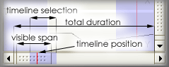

The timelime scrollbar is used to select the portion of the timeline which is visible in the timeline frame. The scrollbars indicate the visible portion and can be dragged with the mouse to navigate through the session. They disappear when the total session's duration is visible in the timeline frame.
A blue shaded rectangle indicates the current timeline selection in respect to the total session duration. A red vertical line indicates the current timeline position in respect to the total session duration. To alter these, use the timeline axis or the pointer tool.
Typing Ctrl+Cursor Left will zom out, Ctrl+Cursor Right will zoom in. For zoom-in, when the timeline position (vertical red bar) is visible, the zoom will try to retain the relative timeline position; when timeline position is before the visible span, the left margin will not be altered, when the timeline position is after the visible span, the right margin will not be altered. Alternatively you can use the zoom tool.